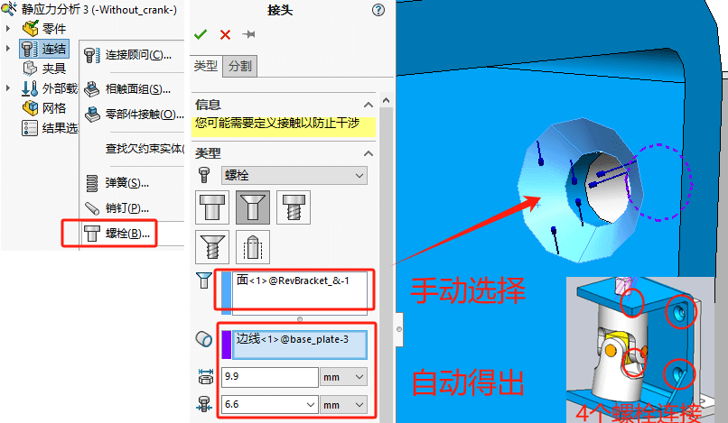
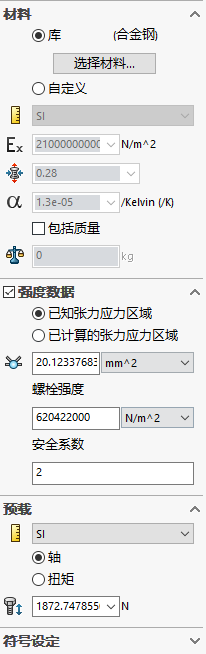

Simulation-接触和接头
装配体的配合是不会在仿真里生效的，仿真里的模型默认是相互独立分离的。因此，你需定义【接触条件】或【接头】来描述零部件间的相互作用。
新建算例
万向节分析
万向节装配体是用来传递扭矩的，即从垂直方向传递到轴的倾斜方向。该装体由支架背面的四个沉头螺栓连接在底座上，而底座则由两个M8的沉头螺检连接到另一个结构件中。通过对手柄施加2.5N的水平力来产生扭矩。从顶视图看，力的方向季直于手辆臂。
轴刚性地连接在万向节头(Yoke_femal)的底面并穿过支架(bracket)的圆孔。
假设由于不正确的加工及轴与支架接触部分的摩擦引起的温升，接触部分会临时性接触，从而导致杆件把有粗矩都传递到支架上。进一步增加的扭矩会使连接部分松脱，从而导致装配体开始旋转。
材料
新建算例&材料
连结
螺栓
【紧密配合】
选项不仅控制螺栓是否直接于孔接触，还控制螺栓孔的壁面是否会发生形变。
- 如果螺栓刚度<<零件刚度，柔软的螺栓不会使孔壁形变，则取消勾选下✖；
- 如果螺栓刚度=>零件刚度，则需要勾选✔；
- 如果螺栓直径<<螺栓孔直径，螺栓碰不到孔壁，则取消勾选✖；
考虑螺栓强度；考虑螺栓预载；
是，相同异形孔特征里的都会生成螺栓接头。

自动相触面组
对于装配体已经配合好的重合面，在仿真中需要通过【相触面组】的方式来约束零部件间的贴合接触。
右键【连结-相触面组】，使用“自动查找相触面组”的方式。他会根据零部件间面与面贴合情况列出“可作为相触面组”的结果。选择自动查找的结果，软件会提示你是否生成所选相触面组，选择“是”即可。
带间隙的接触
对于一些非贴合面（带间隙）的接触，我们可以在【相触面组】中，选择“缝隙(间隙)”属性，并选择“始终忽略间隙”的方式。
销钉
夹具
地脚螺栓
右键【连结-螺栓】
完成后，在夹具内容里就会有用螺栓固定的“地脚螺栓”2个。

虚拟壁
地脚螺栓位置的底面需要有“虚拟璧”，用作地脚螺栓作用的模型底面于“虚拟壁”固定。虚拟壁有两种可用类型：【刚性】和【柔性】。
- 刚性：假设无穷大，可用于模拟非常坚硬的底座。
- 柔性：则必须定义“轴向”，“切向”的有效基本刚度值，模拟复合底座墙壁。

载荷
远程载荷
因为我们不关注曲柄臂部件的变形情况，因此这里可以使用【远程载荷】来简化替代曲柄臂的受力模型，这样我们就无需对曲柄臂进行网格划分。
网格
运行

仅显示零件结果
总结
本意分析了一个含有多个接触条件及接头的实体网格装配体，学习了创建局部相触面组的方法。指定旋转刚度的销钉接头用来模拟真实的杆件。使用远程载荷特征远距离加载载荷，而无需对连接件进行建模。
接头类型
接触条件，在前面零件的分析里已有了解过了，但接头条件则是装配体的一个特色。利用【接头】的数学模型替代建模的真实模型可以有效加快分析进程，减少网格数量加快求解速度。类型包括：
| 接头类型 | 定义 |
|---|---|
| 定义两个截然不同的实体中面之间的刚性链接。 | |
| 定义只抗张力（电缆）、只抗压缩或者同时抗张力和压缩的弹簧。 | |
| 连接两个零部件的圆柱面。 | |
| 在零件或装配体的所选面与地之间定义一个弹性基座。 | |
| 在两个零部件之间或零部件与地之间定义一个螺栓接头。 | |
| 通过一个在两端铰接的刚性杆将模型上的任意两个位置捆扎在一起。 | |
| 估计焊接两个金属零部件所需的适当焊缝大小。 | |
| 不使用任何填充材料而在小块区域（点）上连接两个或更多薄壁重叠钣金件。 | |
| 在杆和外壳零部件之间应用轴承接头。轴承夹具在零部件和地面之间应用轴承支撑。 |
相触面组高级选项